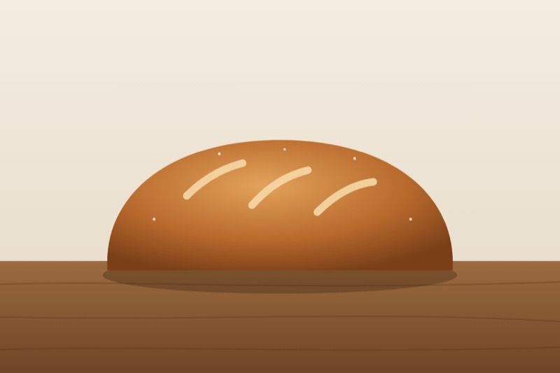

Sam Rivera
Weekend baker in Toronto. This is my corner of the web.

About me
I started baking bread in 2020, like everyone else, and never stopped.
These days I bake most Saturdays and give most of it away.
What I bake
- Sourdough and rye bread
- Birthday cakes, for friends who ask nicely
- Cinnamon buns, only in winter
My Saturday
- Feed the starter on Friday night.
- Mix the dough first thing in the morning.
- Bake in the afternoon, then share.
Where I learned